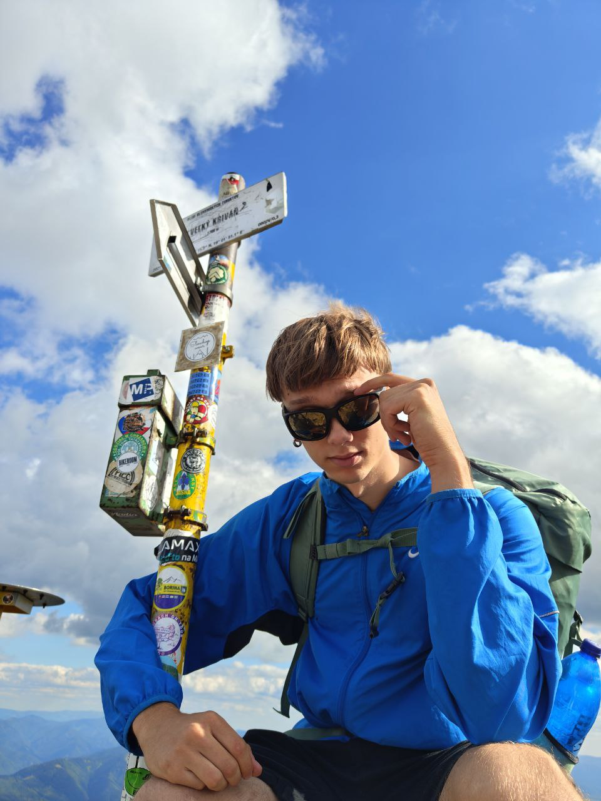

Zivotopis
Programovacie zručnosti
Tu sú moje programovacie zručnosti, zoradené podľa úrovne:
- Python - pokročilý
- JavaScript - stredne pokročilý
- HTML/CSS - pokročilý
- SQL - stredne pokročilý
- C++ - základy
Frameworky a nástroje
- React.js
- Node.js
- Django
- Bootstrap
- Git/GitHub
- Docker
Jazykové zručnosti
Moje jazykové zručnosti zahŕňajú:
- Ukrajinčina - materinský jazyk
- Ruština - pokročilý
- Angličtina - stredne pokročilý (B2)
- Slovenčina - stredne pokročilý (B1)
Vzdelávanie
Školy, ktoré som navštevoval:
- Základná škola č. 66, Charkov, Ukrajina (2011 – 2020)
- Stredná škola KPKH, Charkov, Ukrajina (2020 – 2022)
- Fakulta elektrotechniky a informatiky, Slovenská technická univerzita v Bratislave (FEI STU) (2022 – súčasnosť)

Kontakt:
Email: xdorosh@stuba.sk
Tel: +123456789